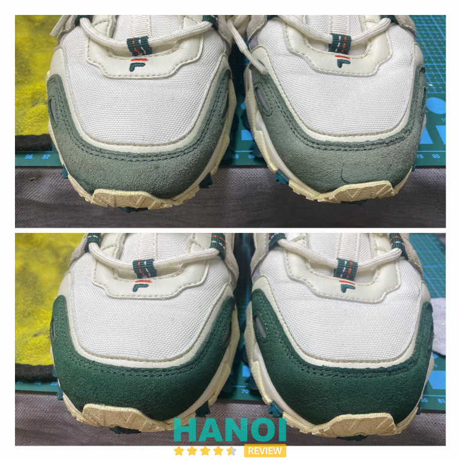
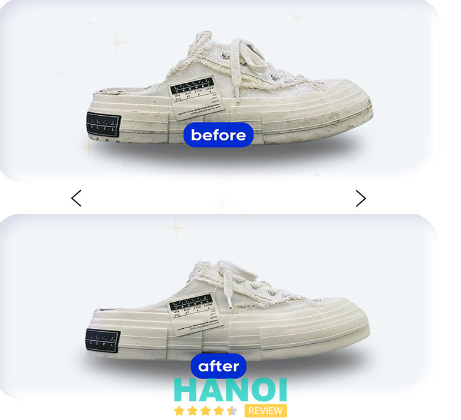
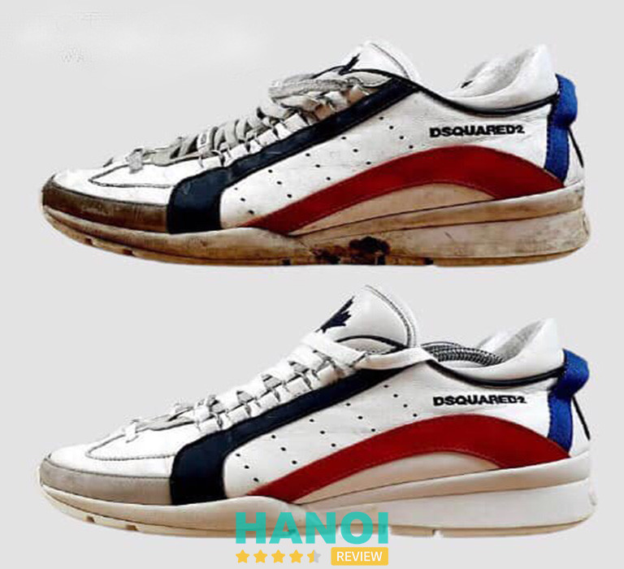
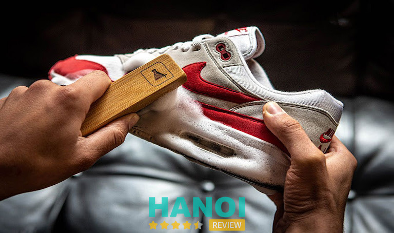
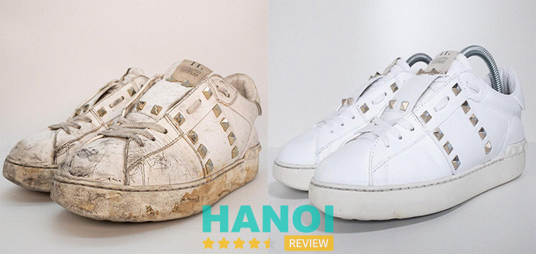
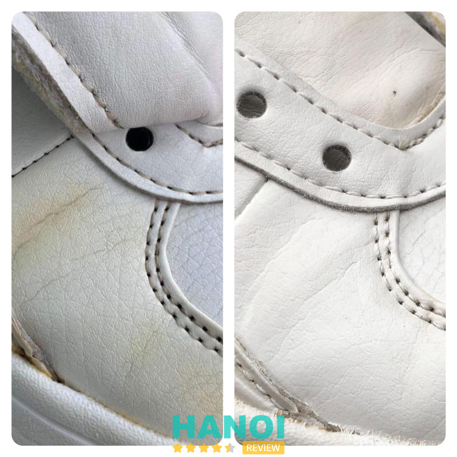
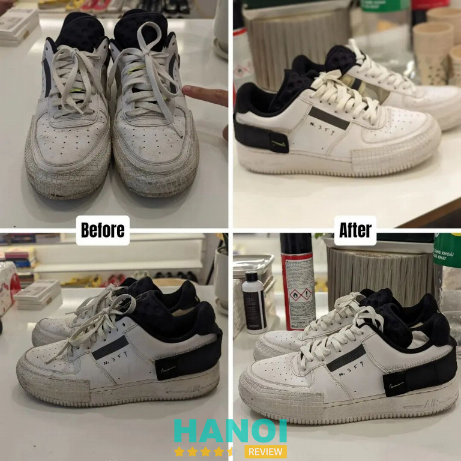
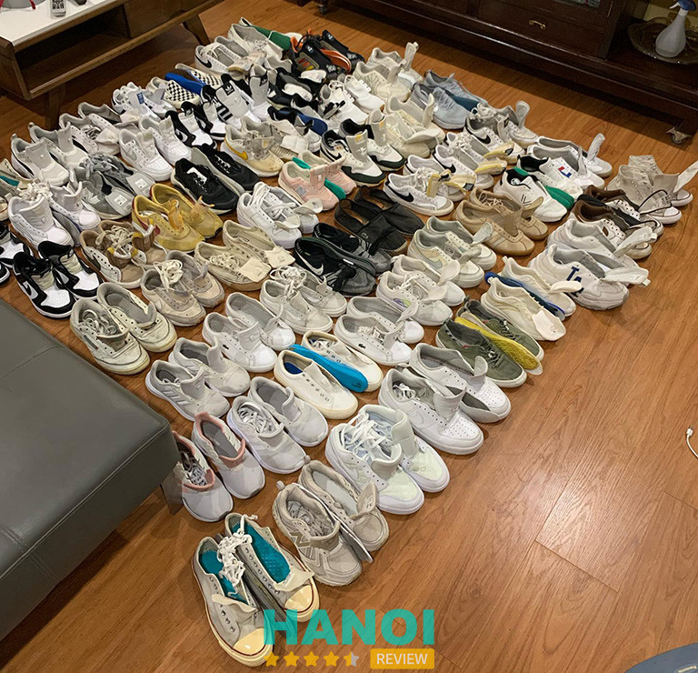

10 Dịch vụ vệ sinh giày sneaker tại Hà Nội uy tín, giá rẻ
Giày sneaker không chỉ đơn thuần là phụ kiện mà còn được xem như một “tuyên ngôn cá tính” của chủ sở hữu. Để giữ cho những đôi giày này luôn trong tình trạng như mới, việc chọn lựa một dịch vụ vệ sinh giày sneaker tại Hà Nội chất lượng cao là điều vô cùng quan trọng
Top 10 Dịch vụ vệ sinh giày sneaker ở Hà Nội đáng tin cậy nhất
Giày sneaker không chỉ là một phụ kiện thời trang mà còn là một biểu tượng của phong cách cá nhân. Do đó, việc giữ gìn chúng sạch sẽ và mới mẻ là rất quan trọng. Dưới đây là top 10 địa chỉ cung cấp dịch vụ vệ sinh giày sneaker ở Hà Nội được tin tưởng nhất, bạn nên tham khảo:
Shoesach Shoes Cleaning
Shoesach là một spa giày chuyên nghiệp tại Hà Nội, nổi bật với dịch vụ chăm sóc, sửa chữa giày bằng kỹ thuật tay nghề cao và sự tỉ mỉ trong từng chi tiết.
Tại Shoesach, cung cấp một loạt các dịch vụ đa dạng bao gồm vệ sinh giày bằng tay với hệ thống chiếu UV và hệ thống hong khô hiện đại, sơn giày để thay đổi màu sắc theo sở thích của khách hàng, và custom giày theo các mẫu riêng biệt tùy vào yêu cầu.
Đội ngũ kỹ thuật của Shoesach đặc biệt am hiểu về các chất liệu và kết cấu giày, đảm bảo sự trân trọng và chăm sóc tốt nhất cho từng đôi giày. Shop sử dụng các dụng cụ chuyên dụng như bàn chải lông ngựa, lông heo và khăn lông mềm, cùng với nhiều loại dung dịch vệ sinh được chọn lọc kỹ lưỡng từ trong và ngoài nước để đánh bay tất cả vết bẩn.
Hơn nữa, Shoesach trang bị máy móc hiện đại để loại bỏ độ ẩm và vi khuẩn gây mùi, đồng thời lọc không khí để tạo môi trường hong khô giày lý tưởng. Tất cả những nỗ lực này là để đảm bảo chất lượng phục vụ tốt nhất cho khách hàng, nhằm mang đến cho bạn trải nghiệm chăm sóc giày đẳng cấp và chuyên nghiệp.
Thông tin liên hệ:
- Địa chỉ: 47/6 Đường Láng, P. Thượng Đình, Q. Thanh Xuân, Hà Nội
- Điện thoại: 0398 394 231
- Email: info@shoesach.com
- Website: shoesach.com
- Fanpage: FB.com/shoesach
Vệ Sinh Giày 5S
Tọa lạc tại trung tâm Hà Nội, Vệ sinh giày 5S tự hào là địa chỉ cung cấp dịch vụ vệ sinh giày chuyên nghiệp, được nhiều khách hàng tin tưởng. Tại 5S, luôn ưu tiên sử dụng phương pháp vệ sinh giày bằng tay không chỉ vì đây là cách hiệu quả nhất để giữ cho giày luôn bền bỉ và sạch sẽ, mà còn bảo vệ tốt nhất cho từng chi tiết nhỏ của giày.

Mỗi đôi giày không chỉ là một phụ kiện thời trang mà còn là một khoản đầu tư cá nhân, vì vậy mỗi bước trong quy trình làm sạch của shop đều được thực hiện một cách tỉ mỉ và cẩn thận.
Với mức phí hợp lý, Vệ sinh giày 5S cam kết mang lại sự hài lòng tuyệt đối cho khách hàng thông qua dịch vụ chăm sóc giày đạt chuẩn cao cấp, phục hồi vẻ đẹp cũng như độ bền cho đôi giày yêu của bạn.
Thông tin liên hệ:
- Địa chỉ: 171/110 Thái Hà, P.Láng Hạ, Q. Đống Đa, Hà Nội
- Điện thoại: 0865 468 683
- Fanpage: FB.com/vesinhgiay5s
Sneaker Vitamin
Sneaker Vitamin là thương hiệu vệ sinh giày hàng đầu Việt Nam, đã có mặt tại Hà Nội và Hồ Chí Minh, mang đến dịch vụ vệ sinh giày chuyên nghiệp, tỉ mỉ cho các tín đồ sành điệu. Đội ngũ của Sneaker Vitamin chuyên xử lý các vết bẩn cứng đầu và nấm mốc lâu ngày, có khả năng làm giảm các vết thâm trên giày từ 80 đến 90%.

Dịch vụ bao gồm vệ sinh toàn diện từ dây giày, lớp lót, đến bên trong của từng đôi giày, đảm bảo sự sạch sẽ ở mọi ngóc ngách. Sneaker Vitamin áp dụng công nghệ khử mùi tiên tiến bằng tia UV và nano bạc để loại bỏ mọi mùi khó chịu, cùng với việc sử dụng máy sấy giày chuyên dụng để đảm bảo giày luôn khô thoáng sau khi làm sạch.
Sneaker Vitamin tự hào là địa chỉ tin cậy cho mọi nhu cầu vệ sinh và bảo dưỡng giày của bạn tại Việt Nam. Với trang thiết bị hiện đại và các sản phẩm chăm sóc giày chất lượng cao, shop hứa hẹn không chỉ làm sạch mà còn giúp giày của bạn trở lại gần như trạng thái ban đầu, giúp chúng luôn trông như mới.
Thông tin liên hệ:
- Địa chỉ: 38B Triệu Việt Vương, P. Bùi Thị Xuân, Q. Hai Bà Trưng, Hà Nội
- Điện thoại: 0835 988 886
- Website: sneakervitamin.com.vn
- Fanpage: FB.com/sneakervitaminhn
Tìm hiểu thêm: 5 Dịch vụ spa đồ da cao cấp tại Hà Nội uy tín, chất lượng
Dịch vụ chăm sóc giày Footprint
FootPrint được biết đến là dịch vụ chăm sóc giày hàng đầu tại Hà Nội, cung cấp các giải pháp toàn diện từ vệ sinh, sửa chữa, đến custom hóa các loại giày như sneaker, giày cao gót, và giày tây, cũng như sửa chữa túi xách.
Được thành lập với mục tiêu mang đến sự mới mẻ và phục hồi cho sản phẩm, FootPrint áp dụng các phương pháp tiên tiến để đảm bảo mỗi sản phẩm không chỉ được làm sạch mà còn được bảo quản lâu dài.
Dịch vụ của FootPrint nổi bật với cam kết chất lượng và sự chuyên nghiệp, tập trung vào việc cung cấp các biện pháp bảo vệ giày và túi xách khỏi các tác nhân gây hại.

Đội ngũ của FootPrint luôn sẵn sàng lắng nghe và phục vụ nhu cầu cụ thể của từng khách hàng, đem đến trải nghiệm chăm sóc và sửa chữa sản phẩm đáng tin cậy và hiệu quả tại Hà Nội.
Khi đến với FootPrint, khách hàng sẽ được trải nghiệm dịch vụ vệ sinh giày sneaker chuyên nghiệp, nơi mỗi đôi giày được xử lý với sự cẩn thận và chuyên môn cao. Các kỹ thuật sửa chữa và phục hồi được thực hiện bởi những người thợ lành nghề, sử dụng các công nghệ tiên tiến và sản phẩm chăm sóc giày đặc biệt nhằm mục đích kéo dài tuổi thọ và tăng cường vẻ ngoài của giày.
Thông tin liên hệ:
- Địa chỉ: 31/1 Hoàng Cầu, P. Chợ Dừa, Q. Đống Đa, Hà Nội
- Điện thoại: 0966 330 611
- Email: Mauduy19@gmail.com
- Fanpage: FB.com/DichVuGiayFootprint
Dubo Shop
Dubo Shop được thành lập từ năm 2010 tại Hà Nội đến nay ngày càng được biết đến như là một “trạm cứu hộ” giày uy tín và chuyên nghiệp, cung cấp dịch vụ Custom Shoes, Shoescare và Shoes Spa.
Với nhiều năm kinh nghiệm và đã tiếp xúc với hàng ngàn đôi giày cùng hàng trăm loại chất liệu khác nhau, shop tự hào mang đến cho khách hàng những giải pháp chăm sóc giày độc đáo, hiệu quả.
Tại Dubo Shop, mỗi đôi giày được xử lý bằng sự tỉ mỉ và chuyên nghiệp tối đa, nhằm đảm bảo chất lượng, sự hài lòng của khách hàng. Shop cung cấp các gói dịch vụ đa dạng từ làm mới, bảo dưỡng đến phục hồi giày, phù hợp với nhu cầu và yêu cầu cụ thể của mỗi khách hàng.
Cam kết với chất lượng dịch vụ hàng đầu, Dubo Shop còn đảm bảo hoàn tiền 100% nếu khách hàng không hài lòng với kết quả cuối cùng. Đến với Dubo Shop, bạn không chỉ tìm thấy một dịch vụ vệ sinh giày chuyên nghiệp mà còn là sự an tâm tuyệt đối về chất lượng và sự hài lòng.
Thông tin liên hệ:
- Địa chỉ: 143/1 Đông Các, P. Trung Liệt, Q. Đống Đa, Hà Nội
- Điện thoại: 0949 307 266
- Email: duboshop@gmail.com
- Fanpage: FB.com/DuBoShop
Amazinn
Amazinn là dịch vụ giặt khô giày sneaker đầu tiên và độc đáo tại Hà Nội, được sáng lập bởi các chuyên gia đam mê với tinh thần rằng sneaker không chỉ là giày mà còn là một phần của nền văn hóa đô thị sôi động.
Amazinn cung cấp dịch vụ chăm sóc toàn diện cho đa dạng các loại giày từ sneaker thể thao, Timberland, đến giày cổ điển, boots, … đáp ứng nhu cầu của những người yêu giày chuyên nghiệp.

Amazinn cam kết mang lại dịch vụ làm sạch sâu, loại bỏ mọi vết bẩn từ lót giày đến đế và mũi giày kín mà bạn khó có thể tự làm sạch. Sử dụng dung dịch vệ sinh chuyên dụng như Jason Markk và Crep cùng với bàn chải lông mềm, Amazinn đảm bảo giày của bạn không bị bong tróc hay bạc màu.
Hơn nữa, quá trình phơi giày bằng máy UV diệt khuẩn và khử mùi bằng nước hoa đặc biệt tại đây giúp giày của bạn luôn thơm tho và sạch sẽ.
Dịch vụ còn bao gồm phục hồi form giày với shoe tree và lót giấy bên trong để giữ form trong suốt quá trình giao nhận. Amazinn tự hào mang đến dịch vụ vệ sinh giày sneaker với tiện ích lấy và trả tại nhà, kết hợp với việc xác nhận mức độ hài lòng của khách hàng trước khi giao, đem lại sự tiện lợi và tin cậy tuyệt đối cho mỗi khách hàng.
Thông tin liên hệ:
- Địa chỉ: 50 Hoàng Sâm, P. Nghĩa Đô, Q. Cầu Giấy, Hà Nội
- Điện thoại: 0949 689 988
- Email: amazinnvn@gmail.com
Sneaker Factory
Sneaky Factory là một địa điểm chăm sóc giày uy tín, nổi bật tại Hà Nội, cung cấp đa dạng các dịch vụ từ vệ sinh, sửa chữa, phục hồi đến bảo vệ giày, dép và các phụ kiện như ốp điện thoại hay case Airpod. Đặc biệt, Sneaky Factory còn có dịch vụ custom theo yêu cầu cho các loại sneaker, mang lại cho khách hàng sự độc đáo và cá nhân hóa cao.

Với cam kết “Experience The Difference”, Sneaky Factory không chỉ cung cấp dịch vụ chất lượng cao mà còn tạo ra một trải nghiệm khác biệt, nhằm xây dựng một cộng đồng Sneaker văn minh, nơi mọi người có thể cùng nhau trao đổi kiến thức và kỹ năng về cách chăm sóc và bảo vệ giày. Để khẳng định chất lượng dịch vụ, Sneaky Factory cung cấp bảo hành 3 tháng cho gói dịch vụ phục hồi và bảo vệ.
Thêm vào đó, để tạo thuận tiện tối đa cho khách hàng, Sneaky Factory cũng miễn phí vận chuyển hai chiều cho các hóa đơn trên 500.000VND đảm bảo trải nghiệm dịch vụ tiện lợi và thoải mái nhất cho khách hàng. Quy trình xử lý giày tại Sneaky Factory:
- Tiếp nhận, tư vấn
- Vệ sinh dây giày, miếng lót
- Làm sạch toàn bộ từ trong ra ngoài
- Sấy khô
- Chiếu tia UV
- Xịt khử mùi
- Kiểm tra lần cuối trước khi trả giày
Thông tin liên hệ:
- Địa chỉ: 315/25B Nguyễn Khang, P. Yên Hòa, Q. Cầu Giấy, Hà Nội
- Điện thoại: 093 172 75 53
- Email: sneakyfactory@gmail.com
- Website: sneakyfactory.com
- Fanpage: FB.com/SneakyFactory
Đừng bỏ qua: 10 Cửa hàng bán giày sneaker tại Hà Nội uy tín, nhiều mẫu mã
Vệ Sinh Giày VSG
Vệ Sinh Giày VSG là chuỗi hệ thống dịch vụ chăm sóc và phục hồi giày chuyên nghiệp tại Hà Nội. Với hơn 6 năm kinh nghiệm và một quá trình không ngừng đổi mới, VSG cung cấp một loạt các dịch vụ từ vệ sinh cơ bản đến phục hồi giày toàn diện, bao gồm vệ sinh toàn bộ trong ngoài, dây và lót giày, cũng như các dịch vụ chuyên sâu như tẩy ố vàng, sơn và sửa chữa giày.

VSG cũng nổi bật với gói phục hồi giày đa dạng, bao gồm dán đế, tẩy ố mốc, và sơn đế, giúp đôi giày của bạn được phục hồi như mới. Để thuận tiện cho khách hàng, VSG cung cấp dịch vụ giao nhận hai chiều trong nội thành Hà Nội và miễn phí giao nhận một chiều cho các hóa đơn vượt một mức nhất định trong phạm vi 5km đầu tiên.
Ngoài ra, VSG còn hỗ trợ chuyển phát nhanh toàn quốc, đảm bảo đôi giày của bạn được chăm sóc một cách nhanh chóng và tiện lợi. Đến với Vệ Sinh Giày VSG, bạn còn được trải nghiệm một cách chăm sóc giày tiên tiến và chuyên nghiệp, giúp kéo dài tuổi thọ cho từng đôi giày của mình.
Thông tin liên hệ:
- Địa chỉ: 19/5 Vạn Bảo, P. Liễu Giai, Q. Ba Đình, Hà Nội
- Điện thoại: 0888 590 911
- Website: vesinhgiay.com
- Fanpage: FB.com/vesinhgiaycom
Vệ sinh giày Rapiz
Vệ sinh giày Rapiz tự hào là một trong những địa chỉ vệ sinh giày sneaker hàng đầu ở Hà Nội, cam kết mang đến cho khách hàng dịch vụ nhanh chóng và chuyên nghiệp. Tại Rapiz, áp dụng một quy trình vệ sinh tối ưu, giúp tiết kiệm thời gian cho khách hàng với khả năng phân loại, vệ sinh từng đôi giày một cách kỹ càng.

Cơ sở sử dụng hóa chất vệ sinh an toàn và hiệu quả, đảm bảo không chỉ làm sạch tối đa mà còn bảo vệ tốt cho cả giày và kỹ thuật viên thực hiện. Đặc biệt, shop cũng trang bị những công nghệ sấy khử mùi và khử khuẩn hiện đại, đảm bảo rằng mỗi đôi giày sau khi vệ sinh sẽ khô thoáng 100%, mang lại cảm giác thoải mái tối đa cho người dùng.
Ngoài ra, Rapiz cung cấp dịch vụ giao nhận giày tận nơi trong vòng 24 giờ, thuận tiện cho những ai bận rộn không có thời gian đến trực tiếp cửa hàng. Đội ngũ nhân viên tư vấn luôn sẵn sàng hỗ trợ, tư vấn nhiệt tình để bạn có thể lấy lại giày đã được vệ sinh chỉ trong một ngày. Uy tín, trách nhiệm và nhiệt tình là những gì khách hàng có thể cảm nhận khi sử dụng dịch vụ tại Vệ sinh giày Rapiz.
Thông tin liên hệ:
- Địa chỉ: 63/50 Ô Đồng Lâm, P. Phương Liên, Q. Đống Đa, Hà Nội
- Điện thoại: 0588 340 000
- Fanpage: FB.com/vesinhgiay.rapiz
Tiệm vệ sinh giày AAA
AAA.Cleaning là địa chỉ vệ sinh giày sneaker uy tín tại Hà Nội, nổi bật với mức giá cạnh tranh chỉ từ 60.000VND cho mỗi đôi giày. Không chỉ giới hạn ở giày sneaker, shop còn mở rộng dịch vụ vệ sinh cho túi xách, balo và dép, đáp ứng nhu cầu đa dạng của khách hàng.
Đặc biệt, AAA.Cleaning dành ưu đãi giảm 10% cho tất cả các dịch vụ dành cho khách hàng mới, đồng thời cam kết hoàn tiền 100% nếu sản phẩm sau khi làm sạch không làm khách hàng hài lòng.

Với mục tiêu mang đến trải nghiệm dịch vụ chuyên nghiệp như ở nước ngoài, mỗi sản phẩm sau khi được làm sạch sẽ được đựng cẩn thận trong túi riêng biệt, đảm bảo vệ sinh và an toàn trong quá trình vận chuyển.
Thêm vào đó, AAA.Cleaning còn hỗ trợ dịch vụ freeship cho các đơn hàng trong bán kính 5km, tiện lợi và nhanh chóng cho khách hàng không có thời gian đến trực tiếp cửa hàng. Sự chú trọng vào từng chi tiết nhỏ đã giúp AAA.Cleaning trở thành điểm đến tin cậy cho những ai muốn chăm sóc và bảo quản phụ kiện thời trang của mình.
Thông tin liên hệ:
- Địa chỉ: : 6 Ng. 76 An Dương, Yên Phụ, Tây Hồ, Hà Nội
- Điện thoại: 0396 757 995
- Fanpage: FB.com/100086997743652
7 Lưu ý khi chọn Dịch vụ vệ sinh giày sneaker ở Hà Nội tin tưởng nhất
Khi chọn dịch vụ vệ sinh giày sneaker ở Hà Nội, việc lựa chọn một nơi uy tín và chất lượng là điều quan trọng để đảm bảo giày của bạn được chăm sóc đúng cách. Dưới đây là 7 lưu ý giúp bạn tìm được dịch vụ vệ sinh giày tin cậy:
- Xem qua đánh giá của cửa hàng: Bạn nên tìm hiểu về uy tín của dịch vụ thông qua các đánh giá trực tuyến, phản hồi từ khách hàng và các diễn đàn trao đổi thông tin về giày.
- Kinh nghiệm, chuyên môn: Chọn một cơ sở có đội ngũ kỹ thuật viên có kinh nghiệm và được đào tạo bài bản. Đội ngũ càng có kinh nghiệm, càng đảm bảo việc vệ sinh và bảo quản giày được thực hiện một cách chuyên nghiệp.
- Công nghệ, phương pháp làm sạch: Kiểm tra xem cửa hàng có sử dụng công nghệ hiện đại và các dung dịch làm sạch an toàn cho giày hay không. Các phương pháp làm sạch tiên tiến sẽ giúp bảo vệ tốt hơn cho giày của bạn.
- Giá cả dịch vụ: So sánh giá cả và các gói dịch vụ mà họ cung cấp. Một dịch vụ tốt không nhất thiết phải là đắt nhất, nhưng nên cung cấp một mức giá hợp lý phù hợp với chất lượng dịch vụ.
- Tư vấn khách hàng tận tình: Lựa chọn những nơi cung cấp dịch vụ tư vấn tốt và sẵn sàng giải đáp mọi thắc mắc của bạn. Một dịch vụ khách hàng tốt thường là dấu hiệu của một cơ sở chăm sóc giày chuyên nghiệp.
- Khả năng xử lý đa dạng chất liệu: Đảm bảo rằng cơ sở đó có khả năng xử lý nhiều loại chất liệu khác nhau, từ vải, da thường đến da lộn và các chất liệu cao cấp khác.
- Chế độ bảo hành, cam kết chu đáo: Kiểm tra xem dịch vụ có cam kết bảo hành sau khi làm sạch không, điều này thể hiện sự tự tin và trách nhiệm của shop đối với dịch vụ cung cấp.
Tìm kiếm dịch vụ vệ sinh giày sneaker tại Hà Nội không chỉ giúp bạn duy trì vẻ ngoài sạch sẽ, bền đẹp cho giày mà còn giúp kéo dài tuổi thọ của chúng. Lựa chọn một đơn vị cung cấp dịch vụ chuyên nghiệp, có uy tín sẽ mang lại sự an tâm và hài lòng nhất cho bạn.
Có thể bạn quan tâm
- 5 Tiệm giày 2hand tại Hà Nội kiểu dáng đẹp, cực chất, giá rẻ
- 10 Shop giày nữ tại Hà Nội đẹp, chất lượng, được yêu thích nhất
- 5 Shop custom giày tại Hà Nội chuyên nghiệp, dịch vụ tốt nhất
- 10 Địa chỉ bán đàn Piano tại Hà Nội chất lượng, giá tốt nhất
DOANH NGHIỆP: Đăng tải thông tin MIỄN PHÍ.
Tin đọc nhiều


Trở thành người đầu tiên bình luận cho bài viết này!